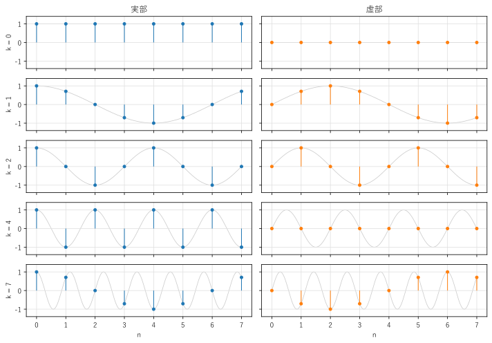
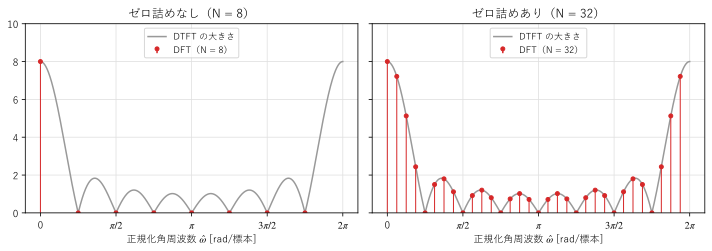
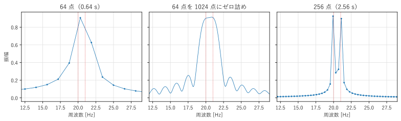

第 6 章 離散時間フーリエ変換と離散フーリエ変換
第 3 章のフーリエ変換は、連続時間の信号を対象としていた。この章では、離散時間の信号のスペクトルを表す離散時間フーリエ変換（DTFT）と、計算機で実際に計算できる離散フーリエ変換（DFT）を説明する。DFT は、本書の後半のすべての処理の土台になる。
離散時間フーリエ変換
離散時間信号 \(x[n]\) の DTFT（discrete-time Fourier transform、離散時間フーリエ変換）を、次の式で定義する。
第 5 章の周波数応答の式 (20) は、インパルス応答の DTFT だったことになる。DTFT は、フーリエ変換の積分 \(\int dt\) を和 \(\sum_n\) に置き換えた形をしている。
DTFT には、次の特徴がある。
\(\hat{\omega}\) は連続な変数であり、\(X(e^{j\hat{\omega}})\) は \(\hat{\omega}\) の連続な関数である。
\(e^{-j(\hat{\omega} + 2\pi)n} = e^{-j\hat{\omega} n}\) なので、\(X(e^{j\hat{\omega}})\) は周期 \(2\pi\) の周期関数である。\(-\pi < \hat{\omega} \le \pi\) の 1 周期だけを考えればよい。
逆変換は、1 周期にわたる積分で表される。
この式は、周期 \(2\pi\) の関数 \(X(e^{j\hat{\omega}})\) のフーリエ級数展開とみなせる。DTFT の式 (22) が展開した級数、\(x[n]\) がそのフーリエ係数である。第 2 章では「周期的な信号 → 離散的なスペクトル」だったが、ここでは「離散的な信号 → 周期的なスペクトル」という逆の関係になっている。
DTFT と、元の連続時間信号のフーリエ変換は、第 4 章の式 (16) で結び付けられる。\(x[n] = x_c(nT_s)\) のとき、\(\hat{\omega} = 2\pi f/f_s\) と置けば
である（\(X_c\) は \(x_c(t)\) のフーリエ変換）。DTFT の周期性は、標本化によってスペクトルが \(f_s\) ごとに繰り返されることの表れである。
例として、長さ \(L\) の矩形の信号（\(0 \le n \le L - 1\) で \(x[n] = 1\)、それ以外で 0）の DTFT を求める。等比数列の和の公式から、
となる。大きさ \(|\sin(L\hat{\omega}/2)/\sin(\hat{\omega}/2)|\) は、\(\hat{\omega} = 0\) で最大値 \(L\) をとり、\(\hat{\omega} = 2\pi k/L\)（\(k = 1, 2, \ldots, L-1\)）で 0 になる。これは、連続時間の矩形パルスの sinc 関数を周期化したような形であり、ディリクレ核と呼ばれる。この関数は第 8 章のスペクトル漏れで重要な役割を果たす。
離散フーリエ変換
DTFT は周波数 \(\hat{\omega}\) が連続な変数であり、無限に長い信号も対象とするので、そのままでは計算機で計算できない。計算機で扱うには、信号の長さも周波数の点の数も有限にする必要がある。
長さ \(N\) の信号 \(x[0], x[1], \ldots, x[N-1]\) の DFT（discrete Fourier transform、離散フーリエ変換）を、次の式で定義する。
逆変換（逆 DFT）は次の式である。
式 (24) を DTFT の式 (22) と比べると、DFT は、長さ \(N\) の信号の DTFT を、\(0 \le \hat{\omega} < 2\pi\) の範囲で等間隔に \(N\) 点だけ取り出したもの
であることが分かる。
\(X[k]\) は、周波数 \(\hat{\omega}_k = 2\pi k/N\) の複素正弦波 \(e^{j2\pi k n/N}\) の成分の大きさと位相を表す。これを、標本化周波数 \(f_s\) を使って実際の周波数に直すと
となる。DFT の各 \(k\) を周波数ビン（または単にビン）といい、ビンの間隔 \(f_s/N\) を DFT の周波数分解能という。
\(e^{j2\pi k n/N}\) は \(k\) について周期 \(N\) なので、\(k\) と \(k - N\) は同じ周波数を表す。そのため、\(k > N/2\) のビンは負の周波数 \((k - N) f_s/N\) に対応する。例えば \(N = 8\) のとき、\(k = 7\) のビンは \(k = -1\)（周波数 \(-f_s/8\)）の成分である。図 21 は、\(N = 8\) の DFT の基底 \(e^{j2\pi k n/N}\) の実部と虚部を描いたものである。\(k = 7\) は \(k = 1\) と実部が同じで、虚部の符号が逆になっている（回転の向きが逆）。\(k = 4 = N/2\) はナイキスト周波数に対応し、\(+1\) と \(-1\) を交互にとる。

図 21 \(N = 8\) の DFT の基底の実部（左）と虚部（右）
行列による表現
DFT は、長さ \(N\) のベクトル \(\boldsymbol{x} = (x[0], \ldots, x[N-1])^\top\) に、\(N \times N\) の行列を掛ける線形変換である。\(W_N = e^{-j2\pi/N}\) と置くと、
と書ける。この行列を \(W\) とすると、\(W\) の各行は互いに直交し、\(W^{\mathsf{H}} W = N I\) が成り立つ（\(W^{\mathsf{H}}\) は共役転置）。これは第 1 章の内積の言葉でいえば、\(N\) 本の複素正弦波のベクトルが互いに直交し、長さの 2 乗がそれぞれ \(N\) であることを意味する。したがって逆行列は \(W^{-1} = \frac{1}{N}W^{\mathsf{H}}\) であり、これが逆 DFT の式 (25) である。DFT は、\(N\) 次元のベクトルを、複素正弦波という直交基底で表し直す変換である。
サンプルの dft_naive.py は、DFT を定義どおりの二重ループと行列の積で計算し、NumPy の np.fft.fft() と比べる。
17def dft_loop(x: NDArray[np.complex128]) -> NDArray[np.complex128]:
18 """DFT を二重ループで計算する（計算量は N^2 に比例する）."""
19 n_points = len(x)
20 result = np.zeros(n_points, dtype=np.complex128)
21 for k in range(n_points):
22 for n in range(n_points):
23 result[k] += x[n] * np.exp(-2j * np.pi * k * n / n_points)
24 return result
x = [ 1.5 1.707 0.5 -0.707 -0.5 0.293 0.5 0.707]
X[k] = [ 4.+0.j 4.-0.j -0.-2.j 0.+0.j 0.-0.j 0.-0.j -0.+2.j 4.+0.j]
|X[k]| = [4. 4. 2. 0. 0. 0. 2. 4.]
ループと行列の結果が一致する: True
np.fft.fft と一致する: True
逆 DFT で元に戻る: True
パーセバルの定理: sum |x|^2 = 7.0000, sum |X|^2 / N = 7.0000
実信号なので X[N - k] = conj(X[k]) が成り立つ: True
入力は、直流 0.5、\(k = 1\) の余弦波（振幅 1）、\(k = 2\) の正弦波（振幅 0.5）の和である。DFT の結果を読み解くと、次のようになる。
\(X[0] = 4\)：直流成分の \(N\) 倍（\(0.5 \times 8\)）。
\(X[1] = X[7] = 4\)：振幅 1 の余弦波は、\(k = 1\) と \(k = -1\)（\(= 7\)）に、振幅の半分の \(N\) 倍（\(0.5 \times 8\)）ずつ分かれる（第 1 章の式 (3)）。
\(X[2] = -2j\)、\(X[6] = 2j\)：振幅 0.5 の正弦波は、\(\sin\theta = (e^{j\theta} - e^{-j\theta})/(2j)\) なので、\(k = 2\) に \(0.5 \times 8/(2j) = -2j\)、\(k = -2\)（\(= 6\)）にその共役 \(2j\) が現れる。
周波数がちょうどビンに一致する正弦波は、振幅 \(A\) に対して、正と負の周波数のビンに大きさ \(AN/2\) ずつ現れる。振幅を求めるには、\(|X[k]|\) を \(N/2\) で割ればよい（直流の場合は \(N\) で割る）。
サンプルの全体：dft_naive.py
DFT の性質
DFT は、フーリエ変換とほぼ同じ性質をもつ。ただし、DFT は長さ \(N\) の有限の信号を扱うので、「ずらす」操作が循環的（巡回的）になる点が異なる。主な性質を 表 4 にまとめる。添字の \((\cdot)_N\) は、\(N\) で割った余りを表す。
性質 |
時間領域 |
周波数領域 |
|---|---|---|
線形性 |
\(a x[n] + b y[n]\) |
\(a X[k] + b Y[k]\) |
循環シフト |
\(x[(n - m)_N]\) |
\(e^{-j2\pi k m/N} X[k]\) |
周波数シフト |
\(e^{j2\pi l n/N} x[n]\) |
\(X[(k - l)_N]\) |
共役対称性 |
\(x[n]\) が実数 |
\(X[N - k] = X^*[k]\) |
循環畳み込み |
\((x \circledast y)[n]\) |
\(X[k]\,Y[k]\) |
パーセバルの定理 |
\(\displaystyle\sum_{n=0}^{N-1} |x[n]|^2\) |
\(\displaystyle\frac{1}{N}\sum_{k=0}^{N-1} |X[k]|^2\) |
前の節の実行結果では、パーセバルの定理（両辺とも 7）と、共役対称性（\(X[7] = X^*[1]\)、\(X[6] = X^*[2]\)）が確かめられている。実数の信号では、\(k = 0\) から \(N/2\) までのビンだけで、スペクトルのすべての情報が分かる。
DFT は信号を周期的とみなす：逆 DFT の式 (25) は、\(n\) を 0 から \(N - 1\) の範囲の外に広げると、周期 \(N\) の周期関数になる。つまり DFT は、長さ \(N\) の信号を「周期 \(N\) で無限に繰り返す信号の 1 周期」として扱っている。この見方は、第 2 章のフーリエ級数そのものである。循環シフトで、右端からはみ出した標本が左端に戻ってくるのは、このためである。信号の始まりと終わりの値がつながらない場合、繰り返したときにその境目で不連続な跳びが生じる。これが第 8 章で説明するスペクトル漏れの原因になる。
循環畳み込みと線形畳み込み
長さ \(N\) の 2 つの信号の循環畳み込みを、次の式で定義する。
第 5 章の畳み込み和（線形畳み込み）との違いは、\(y\) をずらしたときにはみ出した部分が、反対側から戻ってくることである。DFT の積 \(X[k]Y[k]\) を逆 DFT すると、線形畳み込みではなく、循環畳み込みが得られる。
DFT で線形畳み込みを計算するには、ゼロ詰めを使う。長さ \(L\) の信号と長さ \(M\) の信号の線形畳み込みは長さ \(L + M - 1\) なので、両方の末尾に 0 を足して長さ \(N \ge L + M - 1\) にしてから DFT すれば、はみ出した部分が 0 と重なるだけになり、循環畳み込みと線形畳み込みが一致する。この方法は、第 10 章の高速な畳み込みで使う。
1import numpy as np
2
3x = np.array([1.0, 2.0, 3.0, 4.0])
4h = np.array([1.0, 1.0, 1.0])
5print(np.convolve(x, h)) # 線形畳み込み: [1. 3. 6. 9. 7. 4.]
6n = len(x) # ゼロ詰めなし（N = 4）
7print(np.fft.ifft(np.fft.fft(x, n) * np.fft.fft(h, n)).real)
8# 循環畳み込み: [8. 7. 6. 9.]（はみ出した 7 と 4 が先頭に足される）
9n = len(x) + len(h) - 1 # ゼロ詰めあり（N = 6）
10print(np.fft.ifft(np.fft.fft(x, n) * np.fft.fft(h, n)).real)
11# [1. 3. 6. 9. 7. 4.]（線形畳み込みと一致する）
np.fft.fft(x, n) の第 2 引数 n に信号より長い値を指定すると、末尾に 0 を足してから DFT を計算する。
周波数分解能とゼロ詰め
DFT のビンの間隔 \(f_s/N\) は、観測時間 \(T = N/f_s\) の逆数 \(1/T\) に等しい。では、信号の末尾に 0 を足して \(N\) を大きくすれば、周波数分解能は上がるだろうか。
図 22 は、長さ 8 の矩形の信号について、DTFT の大きさ（式 (23)）と DFT の値を重ねたものである。\(N = 8\) の DFT（左）は、DTFT のちょうど 0 になる点ばかりを取り出しているので、\(k = 0\) 以外はすべて 0 になる。この信号を DFT で見ると、直流成分だけをもつ信号に見える（実際、周期 8 で繰り返すと定数になる）。ゼロ詰めして \(N = 32\) にすると（右）、同じ DTFT の曲線を 4 倍細かく取り出すことになり、曲線の形がよく分かるようになる。

図 22 DTFT（灰色の曲線）と DFT（赤の点）の関係
このように、ゼロ詰めは DTFT の曲線を細かく標本化する（補間する）効果をもつ。しかし、DTFT の曲線そのものは変わらない。曲線の形を決めるのは、0 でない部分の長さ、つまり観測時間である。
図 23 は、20 Hz と 21 Hz の正弦波の和を、標本化周波数 100 Hz で観測した例である。64 点（0.64 s）の観測では、ビンの間隔は 1.5625 Hz で、2 つの正弦波を分離できない（左）。これを 1024 点にゼロ詰めすると、ビンの間隔は 0.098 Hz になり曲線は滑らかになるが、やはり 1 つの山にしか見えない（中）。観測時間を 256 点（2.56 s）に延ばすと、はじめて 2 つの山に分かれる（右）。

図 23 ゼロ詰めと観測時間の延長の違い
2 つの周波数を分離する能力（本来の意味の周波数分解能）は、おおよそ観測時間の逆数 \(1/T\) で決まる。ゼロ詰めは見た目を滑らかにし、ピークの位置を正確に読み取るのには役立つが、分解能そのものは上げない。分解能を上げるには、より長い時間、信号を観測する必要がある。これは第 3 章の時間幅と帯域幅の関係の、DFT での表れである。
まとめ
DTFT \(X(e^{j\hat{\omega}}) = \sum x[n] e^{-j\hat{\omega} n}\) は、離散時間信号の連続で周期 \(2\pi\) のスペクトルである。
DFT \(X[k] = \sum_{n=0}^{N-1} x[n] e^{-j2\pi kn/N}\) は、長さ \(N\) の信号の DTFT を \(N\) 点で等間隔に取り出したものである。ビン \(k\) は周波数 \(k f_s/N\) に対応し、\(k > N/2\) は負の周波数を表す。
DFT は、複素正弦波という直交基底による座標変換であり、\(N \times N\) の行列で表せる。
DFT は信号を周期 \(N\) で繰り返すとみなす。DFT の積は循環畳み込みになるので、線形畳み込みにはゼロ詰めが必要である。
ゼロ詰めは DTFT を細かく補間するだけで、周波数分解能は観測時間で決まる。